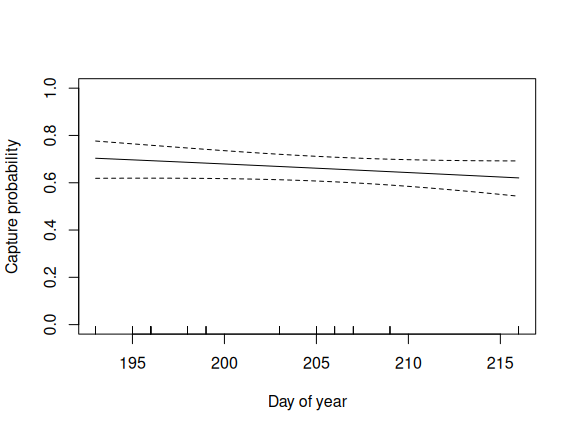
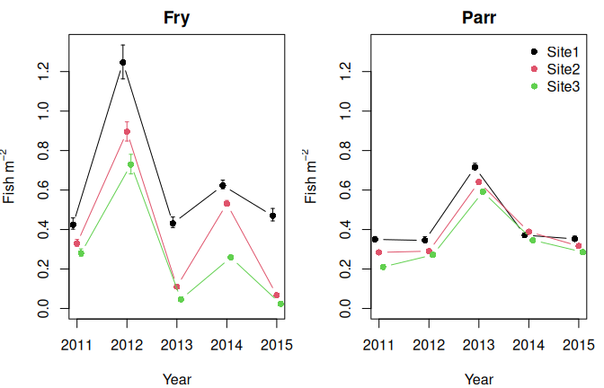

9 October 2026

the model
For a sample s (a unique combination of site visit, species and lifestage) fished with n_s passes, let y_{si} be the number of fish caught on pass i and p_{si} the capture probability on that pass. The probability that a fish is first caught on pass i is
\pi_{si} = p_{si} \prod_{j < i} (1 - p_{sj})
Conditional on the total catch, T_s = \sum_i y_{si}, the counts are multinomial with probabilities \pi_{si} / P_s, where P_s = \sum_i \pi_{si} is the cumulative capture probability. This gives the log likelihood
\ell = \sum_s \left( \sum_i y_{si} \log \pi_{si} - T_s \log P_s \right)
which does not depend on the unknown number of fish at the site. Capture probability is modelled on the logit scale
\text{logit}(p_{si}) = \mathbf{x}_{si}^\top \boldsymbol{\beta} + \mathbf{z}_{si}^\top \mathbf{b}, \qquad b_k \sim N(0, \sigma_{g(k)}^2)
where \boldsymbol{\beta} are fixed effects and \mathbf{b} are optional random effects, for example for visit and sample, with one standard deviation \sigma_g for each random effect term. The random effects are integrated out of the likelihood using the Laplace approximation, and the fixed effects and standard deviations are estimated by maximum likelihood using RTMB.
Fish density is then estimated by dividing the total catch by the area fished and the cumulative capture probability: T_s / (A_s P_s).
installation
To install the ef package from r-universe run
install.packages("ef2", repos = c('https://faskally.r-universe.dev', 'https://cloud.r-project.org'))or to install the latest development version from GitHub run
remotes::install_github("faskally/ef2")Create Required Fields for Analysis
Create a factor for pass with separate levels for the first and subsequent passes. NOTE: Assuming the second and third pass have the same capture probability avoids problems with model identifiability (Millar et al., 2016)
Create a sampleID for grouping EF counts together. A sample is a unique combination of site visit x species x lifestage and is required by the EF function
ef2_data$sampleID <-
as.numeric(
factor(
paste(ef2_data$date, ef2_data$siteID, ef2_data$lifestage, ef2_data$species)
)
)Create a visitID for unique site visits. This is used to include between visit variation as a random effect (see below).
Create a factor for year
ef2_data$fyear <- factor(ef2_data$year)Fit a Model
Fit a simple model. This contains a factor for pass (2 levels), lifestage (2 levels), site (3 levels) and year (5 levels). Continuous variables can be added as linear or smooth terms, see below and Millar et al., 2016 for further details.
m1 <-
efp2(
count ~ siteID + fyear + pass12 + lifestage,
data = ef2_data, pass = pass, id = sampleID
)##
## Call:
## efp2(formula = count ~ siteID + fyear + pass12 + lifestage, data = ef2_data,
## pass = pass, id = sampleID)
##
## Formula:
## count ~ siteID + fyear + pass12 + lifestage
## <environment: 0x5577755fd210>
##
## No random effects
##
## Coefficients:
## Estimate Std. Error z value Pr(>|z^2|)
## (Intercept) 0.65231 0.1723 3.78665 1.527e-04
## siteIDSite2 0.07453 0.1354 0.55053 5.820e-01
## siteIDSite3 -0.02373 0.1473 -0.16106 8.720e-01
## fyear2012 -0.20996 0.1736 -1.20943 2.265e-01
## fyear2013 0.04698 0.1855 0.25318 8.001e-01
## fyear2014 0.35844 0.1834 1.95392 5.071e-02
## fyear2015 -0.00402 0.2114 -0.01902 9.848e-01
## pass122 -0.23915 0.1311 -1.82432 6.810e-02
## lifestageParr 0.59065 0.1210 4.88215 1.049e-06
##
## Degrees of Freedom: 90 Total (i.e. Null); 81 Residual
## AIC: 3188Smooth Terms
Smooth terms are penalised, and the amount of smoothing is estimated. A smooth is fitted as a random effect: the part of the smooth that is not penalised is a fixed effect, and the standard deviation of the random part controls how smooth the term is.
The recommended smooths are first and second order random walks. These use the Markov random field (mrf) basis from mgcv with a penalty created by rw_penalty(). Both the basis and the penalty are sparse, so these models are quick to fit even when the walk has many steps.
- a first order random walk (
order = 1) penalises the differences between neighbouring levels and shrinks towards a constant - a second order random walk (
order = 2) penalises the second differences and shrinks towards a linear trend
The covariate must be a factor whose levels are the steps of the walk, in order. Here the year factor is replaced by a first order random walk over years.
rw1 <- rw_penalty(levels(ef2_data$fyear), order = 1)
m1_smooth <-
efp2(
count ~ siteID + s(fyear, bs = "mrf", xt = list(penalty = rw1)) +
pass12 + lifestage,
data = ef2_data, pass = pass, id = sampleID
)##
## Call:
## efp2(formula = count ~ siteID + s(fyear, bs = "mrf", xt = list(penalty = rw1)) +
## pass12 + lifestage, data = ef2_data, pass = pass, id = sampleID)
##
## Formula:
## count ~ siteID + s(fyear, bs = "mrf", xt = list(penalty = rw1)) +
## pass12 + lifestage
## <environment: 0x5577755fd210>
##
## Random effects:
## Estimate Std. Error
## sigma s(fyear) 0.192 0.1239
##
## Coefficients:
## Estimate Std. Error z value Pr(>|z^2|)
## (Intercept) 0.59940 0.1565 3.8304 1.279e-04
## siteIDSite2 0.08303 0.1345 0.6172 5.371e-01
## siteIDSite3 -0.02424 0.1466 -0.1653 8.687e-01
## pass122 -0.24364 0.1309 -1.8614 6.269e-02
## lifestageParr 0.59448 0.1160 5.1239 2.993e-07
##
## Degrees of Freedom: 90 Total (i.e. Null); 84 Residual
## AIC: 3193The standard deviation, sigma s(fyear), is that of the steps of the random walk on the logit scale. The starting value of the walk is a fixed effect, so the intercept is for the first year.
The smooth effect of year on capture probability, here for the first pass for fry at Site1, with approximate 95% confidence intervals
newdata <-
data.frame(
siteID = "Site1", pass12 = "1", lifestage = "Fry",
fyear = factor(levels(ef2_data$fyear), levels = levels(ef2_data$fyear))
)
pred <- predict(m1_smooth, newdata = newdata, se.fit = TRUE)
year <- as.numeric(levels(ef2_data$fyear))
plot(year, plogis(pred$fit), type = "b", pch = 16, ylim = c(0, 1),
xlab = "Year", ylab = "Capture probability")
lines(year, plogis(pred$fit - 2 * pred$se.fit), lty = 2)
lines(year, plogis(pred$fit + 2 * pred$se.fit), lty = 2)
The models with a year factor and a random walk over years can be compared using AIC
AIC(m1, m1_smooth)A random walk can have steps with no data, for example a walk over every day of the year when sites were only fished on some of them. All the steps are included in the penalty, and the factor is given the same levels. Here a second order random walk is used for day of the year (doy).
days <- min(ef2_data$doy):max(ef2_data$doy)
ef2_data$fdoy <- factor(ef2_data$doy, levels = days)
rw2 <- rw_penalty(days, order = 2)
m1_doy <-
efp2(
count ~ siteID + s(fdoy, bs = "mrf", xt = list(penalty = rw2)) +
pass12 + lifestage,
data = ef2_data, pass = pass, id = sampleID
)##
## Call:
## efp2(formula = count ~ siteID + s(fdoy, bs = "mrf", xt = list(penalty = rw2)) +
## pass12 + lifestage, data = ef2_data, pass = pass, id = sampleID)
##
## Formula:
## count ~ siteID + s(fdoy, bs = "mrf", xt = list(penalty = rw2)) +
## pass12 + lifestage
## <environment: 0x5577755fd210>
##
## Random effects:
## Estimate Std. Error
## sigma s(fdoy) 1.381e-06 0.001853
##
## Coefficients:
## Estimate Std. Error z value Pr(>|z^2|)
## (Intercept) 0.678310 0.1178 5.75868 8.478e-09
## siteIDSite2 0.001894 0.1448 0.01309 9.896e-01
## siteIDSite3 -0.158752 0.1653 -0.96067 3.367e-01
## pass122 -0.254288 0.1308 -1.94348 5.196e-02
## lifestageParr 0.607910 0.1135 5.35678 8.472e-08
## s(fdoy).null1 -0.550221 0.3837 -1.43400 1.516e-01
##
## Degrees of Freedom: 90 Total (i.e. Null); 83 Residual
## AIC: 3196In this case the standard deviation is very close to zero, so the smooth has been shrunk to its unpenalised part, a linear trend in day of the year (the fixed effect s(fdoy).null1).
newdata <-
data.frame(
siteID = "Site1", pass12 = "1", lifestage = "Fry",
fdoy = factor(days, levels = days)
)
pred <- predict(m1_doy, newdata = newdata, se.fit = TRUE)
plot(days, plogis(pred$fit), type = "l", ylim = c(0, 1),
xlab = "Day of year", ylab = "Capture probability")
lines(days, plogis(pred$fit - 2 * pred$se.fit), lty = 2)
lines(days, plogis(pred$fit + 2 * pred$se.fit), lty = 2)
rug(ef2_data$doy)
Any other penalised smooth from mgcv can be used, for example s(doy) or te(doy, area), but their penalties are not sparse so they take longer to fit. An unpenalised regression spline, whose flexibility is set by its basis dimension k, can be fitted using fx = TRUE, for example s(doy, k = 3, fx = TRUE).
Get Predicted Values for P
Predict P from the model to the full dataset. Note, if all the data is multi-pass then can just use fitted values. However, if you want P for both single and multi-pass data then predict to the new dataframe
ef2_data$prob <- predict(m1, newdata = ef2_data, type = "response")Standard errors of the predictions are available using se.fit = TRUE. To use the plotting and prediction tools in mgcv the model can also be converted to a gam object using as.gam2(m1).
Cumulative Capture Probability and Abundance
The cumulative capture probability of a sample, P, is the probability that a fish is caught on one of the passes. It is estimated for each sample, with standard errors and confidence intervals, using
cp <- capture_prob(m1, se.fit = TRUE)
head(cp)## id npass P se lower upper
## 1 2 3 0.9838939 0.4557355 0.9615466 0.9933439
## 2 1 3 0.9457095 0.3923452 0.8897905 0.9740823
## 3 29 3 0.9210062 0.3264868 0.8601089 0.9567274
## 4 30 3 0.9745545 0.4222702 0.9436305 0.9887166
## 5 16 3 0.9855114 0.3968673 0.9689903 0.9932915
## 6 15 3 0.9502933 0.3846208 0.8999607 0.9759781The standard errors are of \text{logit}(P), and the confidence intervals are computed on the logit scale. newdata can be used to estimate P for other samples, for example single pass samples (Glover et al., 2018).
Abundance is estimated as \hat N = T / P, and density (fish m-2) as \hat N / A, where A is the area fished. The confidence intervals allow for both the binomial variation in the catch and the uncertainty in P
## id catch P se N lower upper area density
## 1 2 42 0.9838939 0.892726 42.68753 42.0000 44.47359 122 0.3498978
## 2 1 49 0.9457095 2.047553 51.81295 49.0000 55.98559 122 0.4246963
## 3 29 140 0.9210062 5.329788 152.00766 141.9123 162.82116 122 1.2459644
## 4 30 41 0.9745545 1.141402 42.07050 41.0000 44.36816 122 0.3448402
## 5 16 86 0.9855114 1.238831 87.26434 86.0000 89.72650 122 0.7152815
## 6 15 50 0.9502933 1.940101 52.61533 50.0000 56.55864 122 0.4312732
## density_lower density_upper
## 1 0.3442623 0.3645377
## 2 0.4016393 0.4588983
## 3 1.1632158 1.3345996
## 4 0.3360656 0.3636734
## 5 0.7049180 0.7354631
## 6 0.4098361 0.4635954To model counts directly, for example with a Poisson model, the offset is \log(A P)
dens$offset <- log(dens$area * dens$P)Plot to check

Comparing Models
Electrofishing count data are typically overdispersed: capture probability varies between visits to a site, and between samples within a visit, by more than the covariates can explain. This variation is included in the model using random effects, which are specified by adding s(f, bs = "re") terms to the formula, where f is a factor.
The sampleID needs to be a factor to be used as a random effect
ef2_data$fsampleID <- factor(ef2_data$sampleID)Fit a model with visit and sample random effects
mfull <- efp2(count ~ siteID + year + lifestage + pass12 +
s(visitID, bs = "re") + s(fsampleID, bs = "re"),
data = ef2_data, pass = pass, id = sampleID)
mfull##
## Call:
## efp2(formula = count ~ siteID + year + lifestage + pass12 + s(visitID,
## bs = "re") + s(fsampleID, bs = "re"), data = ef2_data, pass = pass,
## id = sampleID)
##
## Formula:
## count ~ siteID + year + lifestage + pass12 + s(visitID, bs = "re") +
## s(fsampleID, bs = "re")
## <environment: 0x5577755fd210>
##
## Random effects:
## Estimate Std. Error
## sigma s(visitID) 5.965e-05 0.06556
## sigma s(fsampleID) 7.591e-02 0.17106
##
## Coefficients:
## Estimate Std. Error z value Pr(>|z^2|)
## (Intercept) 0.648110 0.1775 3.65176 2.605e-04
## siteIDSite2 0.079488 0.1418 0.56064 5.750e-01
## siteIDSite3 -0.016539 0.1553 -0.10648 9.152e-01
## year2012 -0.208321 0.1793 -1.16174 2.453e-01
## year2013 0.042289 0.1926 0.21953 8.262e-01
## year2014 0.362184 0.1895 1.91137 5.596e-02
## year2015 -0.002674 0.2168 -0.01234 9.902e-01
## lifestageParr 0.588609 0.1251 4.70513 2.537e-06
## pass122 -0.235586 0.1318 -1.78694 7.395e-02
##
## Degrees of Freedom: 90 Total (i.e. Null); 79 Residual
## AIC: 3192The estimated standard deviations of the visit and sample random effects (on the logit scale) are
mfull$sigmaBecause the random effects are part of the likelihood, models can be compared directly using AIC
- Full model
AIC(mfull)- Model without lifestage
mlife <- efp2(count ~ siteID + year + pass12 +
s(visitID, bs = "re") + s(fsampleID, bs = "re"),
data = ef2_data, pass = pass, id = sampleID)
AIC(mlife)contributing
After making changes to the code, run:
devtools::document()to update help files and the NAMESPACE
then
devtools::check()to check for errors, and fix warnings and notes
Finally, the readme can be rebuilt using
rmarkdown::render("README.Rmd")then changes can be commited and pushed.